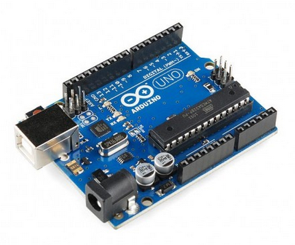
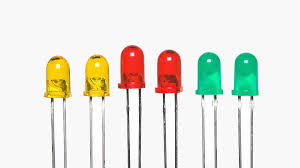
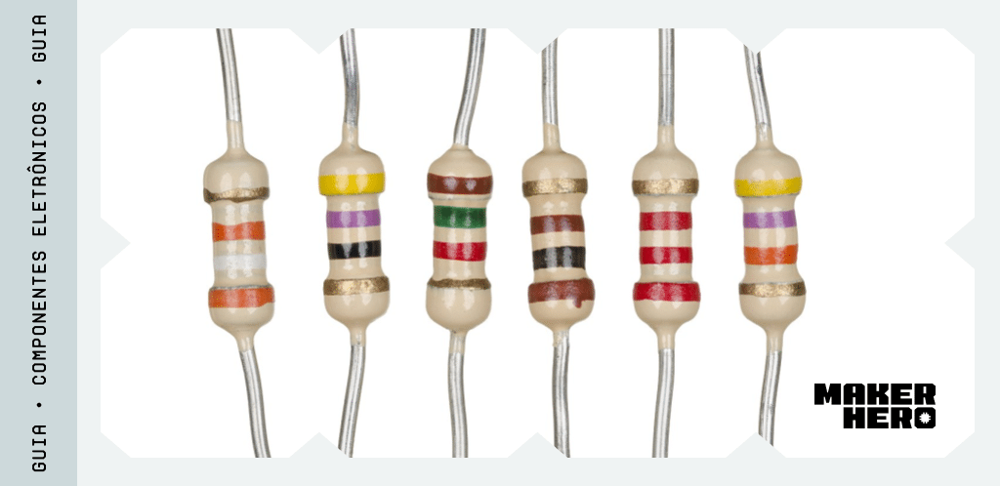
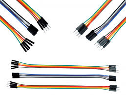
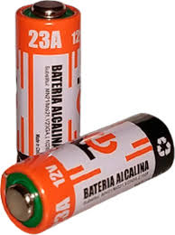
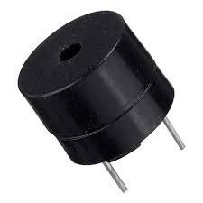

Kit Robotica

Arduino é uma série de microcomputadores de placa única com componentes integrados.
É uma plataforma eletrônica de código aberto que permite criar projetos eletrônicos.
É uma combinação de hardware e software que pode ser usada por iniciantes e profissionais.

Diodo Emissor de Luz. É um componente eletrônico que transforma energia elétrica em luz.

Jumpers são pequenos pedaços de fio condutor utilizados em eletrônica e engenharia de prototipagem para estabelecer
conexões entre pontos em uma placa de circuito impresso (PCB) ou em um protoboard.

"As pilhas são sistemas eletroquímicos que transformam energia química em energia elétrica por meio de
reações de oxirredução espontâneas."

Buzzer é um dispositivo para geração de sinais sonoros (beeps), como aqueles encontrados em computadores.
Para a emissão do som, o buzzer vibra através de um oscilador. Essa oscilação é determinada por uma
frequência, que por sua vez define um som específico.
